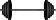

Benchpress Formula
A lot fancier in web page form.
All the extra code makes for an easier user experience.
What's this..?
Just a dolly toggle script.
Well, it's only the css from the framework... How useful is this bootstrap css, anyway..? The buttons are styled well.
jQuery did not fix the onload inconsistency as anticipated... Also, jQuery conversion presents an additional issue involving sprite math.
The element is seemingly not returning proper width info for calcultion. Improved, still, the second barbell graphics are off.
